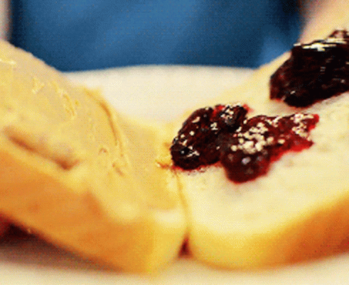
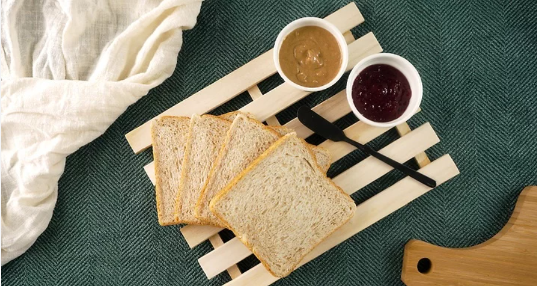
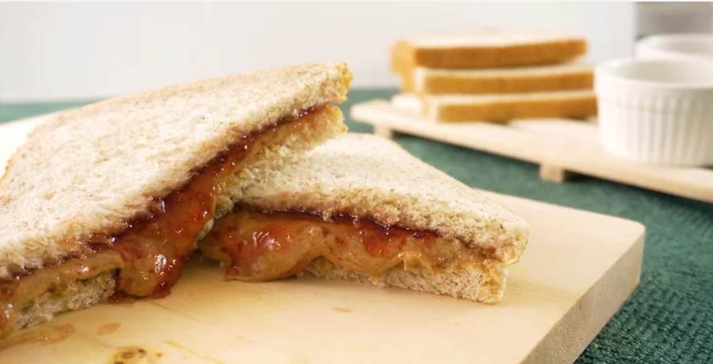

How to make a Peanut Butter and Jelly Sandwhich

Peanut Butter and Jelly Sandwhich
The peanut butter and jelly sandwich (in English, Peanut Butter and jelly sandwich ), better known by its abbreviation PB&J , is a very popular sandwich in the United States , it includes a layer of peanut butter and jam or jelly , usually between two slices of bread, although it can be eaten open. A variant uses two layers of peanut butter, between which a layer of jelly is placed. There are many variants, the most common is to add sweet things like honey , bananas or chocolate , or also something salty like bacon, ham or onions .
Today I'm going to teach you how to make the best Peanut Butter and Jelly Sandwich.
Ingredients:
- Bread (usually one or two slices per sandwich)
- Peanut butter
- Jelly or jam
Making a basic sandwhich
Step 1
Collect your ingredients. You will want peanut butter, some jam or jelly, and some bread. You may also want to grab some butter, as butter can enhance the flavor of the sandwich. There are lots of different kinds of bread and spreads to choose from, so you'll have to do a little experimenting to know what you like.
Step 2
Spread peanut butter evenly onto one slice of bread using a knife. You'll decide how much peanut butter you want, but if you're going to be taking the sandwich somewhere, you'll probably want to go a little light on the peanut butter, otherwise it will get everywhere before you get to eat it.

Step 3
Spread jelly or jam evenly onto the other slice of bread. You'll want to use a teaspoon or knife. Again, unless you're going to be eating it right there, and you really like jelly, try to avoid overwhelming your sandwich with jelly.

Step 4
Press the two slices of bread together. To avoid having peanut butter and jelly run everywhere, do this quickly. A good way is to take both slices at the same time and quickly press them together.

Step 5
Cut the sandwich. The best way to cut the sandwich is diagonal, from one corner to another, giving you two triangle shaped pieces. Otherwise, you can cut directly across the sandwich, leaving you with two rectangular shaped pieces.

Step 6
Enjoy your easy and yummy looking sandwich! Just make sure that you wash your hands afterwards, because you'll be certain to get the gooey mixture of peanut butter and jelly on them.
Fun fact
Why does toast often land butter-side down?
For years this notorious example of Murphy’s Law – ‘If something can go wrong, it will’ – was dismissed by scientists who insisted toast was as likely to land butter-side up as down. Then, in 1996, I published a theoretical analysis of toast falling off a plate that suggested there should be a bias towards butter-side down landings. In 2001, a nationwide experiment involving over 1,000 schoolchildren and 21,000 drops of toast confirmed the theory: toast falling off a plate lands butter-side down almost two-thirds of the time. Contrary to common belief, it’s nothing to do with one side being buttered. The explanation is that as the toast goes over the edge of the plate, it starts to rotate, but the spin-rate is too slow to bring the butter-side uppermost again by the time the toast hits the floor.